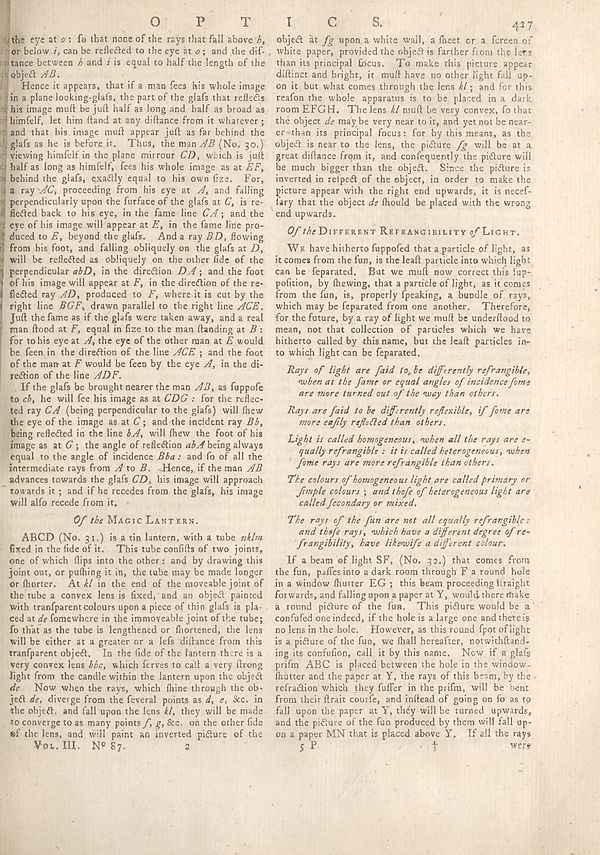

Scan ID britannica:309f765b1ecc83e0a7f7762e44b4a927a7555443:train:681
Image SHA-256 c2be06f2d6151658124b91589cab6163caa72e653bc6e1d62ecc30bbf9a202ee
Status: ok. Running header: O P T I C S. 427 (catchword). Removed page furniture: Page-header: O P T I C S. 427.
PDF · raw Parse reply · LaTeX
Entries: E0061

| # | Class | Box | Parse 3.5 | Used text | Source |
|---|---|---|---|---|---|
| 1 | Text | [0.0117, 0.0375, 0.4473, 0.0938] | the eye at a: fo that none of the rays that fall above _h_ on below i, can be reflected to the eye at o; and the dif. stance between _6 and i is equal to half the length of the object _AB._ | the eye at o: fo that none of the rays that fall above b, or below i, can be reflected to the eye at o; and the dis- tance between b and i is equal to half the length of the object AB. | super_vl |
| 2 | Text | [0.0107, 0.0945, 0.4668, 0.2719] | Hence it appears, that if a man fees like whole image in a plane looking glats, the part of the glats that reflects his image melt be jull half as long and half as broad as himself, let him fland at any distance from it whatever; and that this image mull appear just as far behind the glafs as he is before it. Thus, the man AB (No. 30.) viewing himself in the plane mirrored CD, which is jull half as long as himself, fees his whole image as at _EF_, behind the glafs exactly equal to his own fzz. For, a ray AC, proceeding from his eye at A, and falling perpendicularly upon the surface of the glaf | Hence it appears, that if a man sees his whole image in a plane looking-glass, the part of the glass that reflects his image must be just half as long and half as broad as himself, let him stand at any distance from it whatever; and that his image must appear just as far behind the glass as he is before it. Thus, the man AB (No. 30.) viewing himself in the plane mirror CD, which is just half as long as himself, sees his whole image as at ES, behind the glass, exactly equal to his own size. For, a ray AC, proceeding from his eye at A, and falling perpendicularly upon the surface of the glass at | super_vl |
| 3 | Section-header | [0.4727, 0.2625, 0.8672, 0.2789] | _Of the_ DIFFERENT REFRANGIBILITY of LIGHT. | Of the DIFFERENT REFRANGIBILITY of LIGHT. | super_vl |
| 4 | Text | [0.4551, 0.2844, 0.8906, 0.418] | We have hitherto toppofed that a particle of light, as it comes from the fun, is the leaf particular iron which light can be separated. But we mull now correct this top-polition, by thawing, that a particle of light, as it comes from the fun, is, properly speaking, a bundle of rays, which may be farated from one another. Therefore, for the future, by a ray of light we mull be understood to mean, not that collection of particles which we have hitherto called by this name, but the leaf particles in- to which light can be farated. | We have hitherto supposed that a particle of light, as it comes from the sun, is the least particle into which light can be separated. But we must now correct this supposition, by showing, that a particle of light, as it comes from the sun, is, properly speaking, a bundle of rays, which may be separated from one another. Therefore, for the future, by a ray of light we must be understood to mean, not that collection of particles which we have hitherto called by this name, but the least particles into which light can be separated. | super_vl |
| 5 | Text | [0.4775, 0.4258, 0.8877, 0.4664] | _Rays of light are laid to be differently refrangible, when an the form or equal angles of incidence forms are more turned out of the way than others._ | Rays of light are said to be differently refrangible, when at the same or equal angles of incidence some are more turned out of the way than others. | super_vl |
| 6 | Text | [0.4756, 0.4719, 0.8857, 0.5016] | _Rays are laid to be differently refasible, if firms are more safely reflected than others._ | Rays are said to be differently reflexible, if some are more easily reflected than others. | super_vl |
| 7 | Text | [0.4746, 0.5055, 0.8867, 0.5492] | _Light is called homogeneous, when all the rays are e- quality refrangible: i is treated heterogeneous, when time rays are other refrangible than others._ | Light is called homogeneous, when all the rays are equally refrangible: it is called heterogeneous, when some rays are more refrangible than others. | super_vl |
| 8 | Text | [0.4736, 0.5523, 0.8887, 0.5945] | _The colours of homogeneous light are called primary or female colours ; and thief of heterogeneous light are called secondary or mixed._ | The colours of homogeneous light are called primary or simple colours; and those of heterogeneous light are called secondary or mixed. | super_vl |
| 9 | Text | [0.4717, 0.5992, 0.8896, 0.6469] | _The rays of the fun are not all equally refrangible: and thief rays, which have a different degree of re-fragibility, here likewise a different colors._ | The rays of the fun are not all equally refrangible: and those rays, which have a different degree of refrangibility, have likewise a different colour. | super_vl |
| 10 | Text | [0.458, 0.6484, 0.8877, 0.8781] | If a beam of light SF, (No. 32.) that comes from the fun, paths into a dark room through F a round hole in a window fluter EG ; this beam proceeding straight forwards, and falling upon a paper as Y, would there make a round picture of the fun. This picture would be a confufed one indeed, if the hole is a large one and there is no lens in the hole. However, as this round f spotlight a a picture of the fun, we shall hereafter, notwithflanking its condition, call it by this name. Now it a glafs prifm ABC is placed between the hole in the window-fluiter and the paper at Y, the rays of this term; b | If a beam of light SF, (No. 32.) that comes from the fun, passes into a dark room through F a round hole in a window shutter EG; this beam proceeding straight forwards, and falling upon a paper at Y, would there make a round picture of the fun. This picture would be a confused one indeed, if the hole is a large one and there is no lens in the hole. However, as this round spot of light is a picture of the fun, we shall hereafter, notwithstanding its confusion, call it by this name. Now if a glass prism ABC is placed between the hole in the window-shutter and the paper at Y, the rays of this bea | super_vl |
| 11 | Caption | [0.0537, 0.8656, 0.2139, 0.8789] | **Vox. III. No §7.** | Vol. III. No 87. | super_vl |
| 12 | Text | [0.459, 0.0391, 0.8926, 0.257] | object at fg upon a white wall, a fiecet or a fireen of white paper, provided the object is farther from the less than its principal focus. To make this picture appear, dificent and brighty, it must have no other light fall up- on it but what comes through the lens kl ; and for this reason the whole apparatus is to be placed in a dark, room EFGH. The lens A mull be very convex, fo that the object de may be very near to it, and yet not be near- orthan its principal focus; for by this means, as the object is near to the lens, the picture fg will be at a great distance from it , and consequently | object at fg upon a white wall, a sheet or a screen of white paper, provided the object is farther from the lens than its principal focus. To make this picture appear distinct and bright, it must have no other light fall upon it but what comes through the lens kl; and for this reason the whole apparatus is to be placed in a dark room EFGH. The lens kl must be very convex, so that the object de may be very near to it, and yet not be nearer than its principal focus: for by this means, as the object is near to the lens, the picture fg will be at a great distance from it, and consequently the pict | super_vl |
| 13 | Section-header | [0.1182, 0.6016, 0.334, 0.6156] | _Of the_ MAGIC LANTERN. | Of the MAGIC LANTERN. | super_vl |
| 14 | Text | [0.0098, 0.6211, 0.4434, 0.8648] | ABCD (No. 31.) is a tin lantern, with a tube nklm fixed in the field of it. This tube conflicts of two joints, one of which dips into the others and by drawing this joint out, or pulling it in, the tube may be made longer or shorter. At kl in the end of the moveable joint of the tube, a convex lens is fixed, and an object painted with transparent colors upon a piece of thin glafs is pla- edat de homewhere in the immovable joint of the tube; fo that as the tube is lengthened or fluorescent, the lens will be either at a greater or a left distance from this transferen object. In the field of the | ABCD (No. 31.) is a tin lantern, with a tube nklm fixed in the field of it. This tube consists of two joints, one of which slips into the other: and by drawing this joint out, or pushing it in, the tube may be made longer or shorter. At kl in the end of the moveable joint of the tube a convex lens is fixed, and an object painted with transparent colours upon a piece of thin glass is placed at de somewhere in the immoveable joint of the tube; so that as the tube is lengthened or shortened, the lens will be either at a greater or a less distance from this transparent object. In the field of the | super_vl |
Britannica scans: National Library of Scotland, CC0 1.0. Wikipedia text: Wikipedia contributors, CC BY-SA 4.0, revision links on each page. Generated 2026-10-18T13:26:14+00:00.